Here is a step-by-step tutorial to be better known with the calculator. Much is pretty much the same as with other calculators, while other thing are different. It is not difficult, but doing this tutorial pin out some of the differences and make it easier to use.
Lets head over to the finance functions, and say we are going to calculate the monthly payments for a loan to a new house. We have a loan from before, with a rest value of 300.000, and we need to increase this by 900.000 to 1.200.000. We do currently pay 5457 each month on the current loan, but can afford to increase this to 7.000 for the new loan. The bank has offered 3.45 % annual interest.
Open the calculator, and chose “Finance” from the library popup. Press “AC” to clear out previous calculation if needed. On the upper popup, named “calculations around annuity loan”, press the popup and choose “years with fixed payment”. Then press “GO” to the right of the popup.
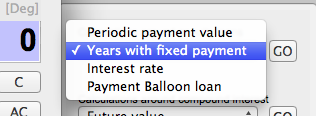
“YearAnnuityLoan(“ appears in the formula area, the bottom drawer opens with some explanation of the function.
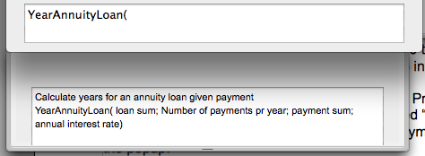
The yellow message area ask for the first parameter:
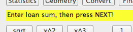
Write 1200 000, and then press the “next” button.
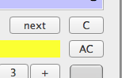
The number show up in the formula area with a semicolon after as parameter delimiter.
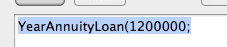
In the yellow text field you have the next question.
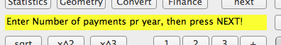
Enter 12 months (write "12”) - press next:
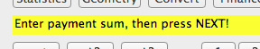
Enter 7000 as the payment sum we would allow. Press next.
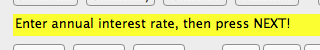
Enter 3.45 as the bank would give us (You are not supposed to press the % sign here). Press next. You now see that the formula is complete. The yellow bar is clear, and the function has got its closing parenthesis. The display show the result to be 19.7 years.
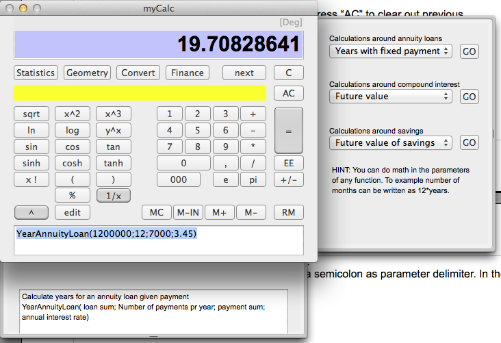
We now know that this loan we would take over at least 20 years, to fit in our budget. Let us calculate the exact payment. The extra expenses for the bank is 1900+1500, and they also take a transaction fee of 50 for each transaction. Lets calculate that.
Press the “AC” button to clear, Now chose the “Periodic payment value” in the popup and press GO.
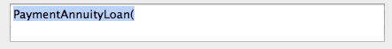
The yellow bar:
Enter the loan sum, include the fees to the bank. Write 1200 000 + 1900 + 1500 press next.
Enter number of months, as 12*20, press next.
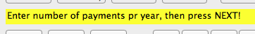
Enter number of payments pr year as 12*20, press next.
Press the interest rate, as 3.45 press next.
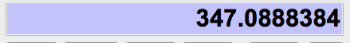
Ooops, this result does not seem to be correct. Lets look at the formula.
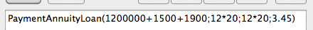
Here, we have included 12*20 on both number of months for the loan, and payments pr year.
Press the edit button to correct.
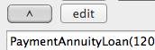
Change the last 12*20, to be only 12, press save.
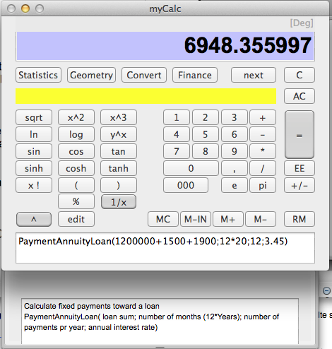
Now, our result look better. We are close to what we calculated in the previous formula. We have changed 19.7 years to 20, and included the bank fees for establishment. To include the bank fee for the transaction, press “+50=” The formula area now show:
6998.355997
_?
PaymentAnnuityLoan(1200000+1500+1900;12*20;12;3.45)+50=6998.355997
The first line that came up after we pressed “=”, have a “_?” after the number. This means that the value will be used in further calculations if you press a function or operand. If you write a new number, it will not be used. Now, your wife/husband is going to share on this payment, so we divide it by to: Write “/2=”:
The formula area now show:
3499.177998
_?
6998.355997/2=3499.177998
Currently, we pay 5457 each month on the exisiting loan. To calculate how much more for each, we simply press "-5457/2=":
770.677998 _?
3499.177998- 5457/2=770.677998
If we had prepared an e-mail while we did those calculations, we would copy those values into the e-mail, while we where doing it, and also copy the text on the bottom drawer to document the parameters:
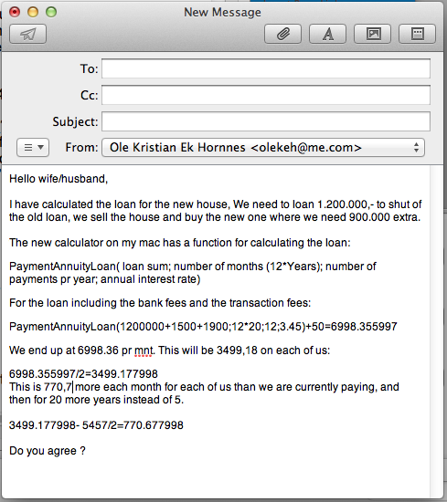
This was the end of this tutorial, hopefully you are now more familiar with using the functions and some of the features of the calculator.